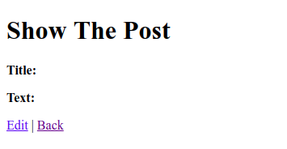
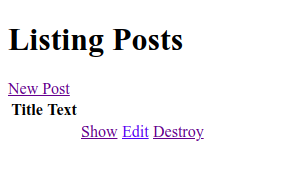
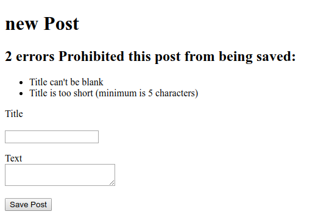

Validation
Adding The Validation
If you look at "Create" at CRUD section, the operation seems to run normally. But you missed something that very important. You'll know that if you submit the form without fill it. And your post will look like this.

And also your list Posts will look like this.

How does the form is passing away the empty data to the database?. That's why you need some validation for this.
Validate the model
To do the basic validation, open the model of post.rb model at app/models/.
class Post < ApplicationRecord
end
Note that Post class inherits from ApplicationRecord. And ApplicationRecord inherits from ActiveRecord::base which supplies a great deal of functionality to your Rails models like basic database CRUD (Create, Read, Update, Delete), operations, data validation, search support, and the ability to relate multiple models to one another.
Let's add a basic validation at Post model.
class Post < ApplicationRecord
validates :title, presence: true,
length: {minimum: 5}
end
The validation tell that all posts have a title at least five character long. With this validation, when you call @post.save on an invalid post, it will return false. Next we need to set the condition at new method if @post.save fails it will show the form back to the user.
def create
@post = Post.new(post_params)
if @post.save
redirect_to @post
else
render 'new'
end
end
Tell the error
Now the validation it's working. You can try it by submit a new blank post. It will return back the form since you don't fill up the form but it's not very helpful at all. We need to tell the user why we bring the form back. To do that open the app/views/posts/new.html.erb and let's add some code.
<%= form_with scope: :post, url: posts_path, local: true do |f|%>
<% if @post.errors.any? %>
<div id="error_explaination">
<h2>
<%= pluralize(@post.errors.count, "error") %>
Prohibited this article from being saved:
</h2>
<ul>
<% @post.errors.full_messages.each do |msg| %>
<li><%= msg %></li>
<% end %>
</ul>
</div>
<% end %>
At the code, we check if there are any errors with @post.errors.any? and in that case we show a list of all errors with @post.errors.full_messages.
pluralize is a rails helper that takes a number and string as it arguments. If the number is greater than one, the string will be automatically pluralized.
Now if you submit the blank form, You will send back to the form and error information as well.
